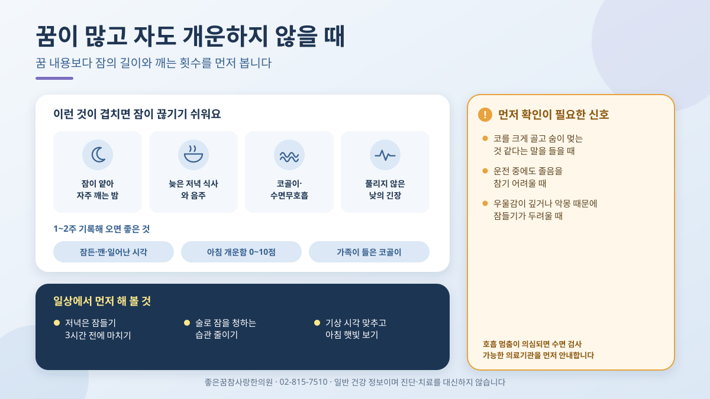

꿈이 많고 자도 개운하지 않을 때는 꿈 자체보다 실제 수면 시간과 중간에 깨는 횟수, 코골이, 늦은 식사와 음주를 먼저 묻고 소화와 긴장, 스트레스까지 함께 살핍니다.
여쭙는 것
- 몇 시에 자고 몇 시에 일어나나요? 중간에 몇 번 깨나요?
- 일어날 때 머리가 무겁거나 입이 마르나요?
- 코를 곤다거나 숨을 멈춘다는 말을 들은 적이 있나요?
생활에서 해 볼 것
- 저녁 식사는 잠들기 3시간 전에 마치고 야식은 줄이기
- 술로 잠을 청하는 습관 줄이기
- 침실은 어둡고 조용하게, 너무 덥지 않게 맞추기
한의원에서 함께 살필 것
- 자도 개운하지 않고 아침에 몸이 무거운 경우 잠의 깊이와 근육의 긴장 상태를 함께…
- 늦은 식사 뒤 속이 더부룩한 채 잠드는 경우 소화와 식사 시간을 함께 살핍니다.
- 낮에 머리가 맑지 않고 집중이 흐려지는 경우 식사 시간과 수면 리듬이 맞는지 함께…
먼저 확인이 필요한 신호
- 코를 크게 골고 숨이 멎는 것 같다는 말을 들은 경우
- 운전 중에도 졸음을 참기 어려운 경우
- 우울감이 깊거나 악몽 때문에 잠들기가 두려운 경우

"밤새 꿈을 꾸고 일어나도 피곤해요"라는 말씀을 자주 듣습니다. 꿈을 기억하는 것 자체보다 잠이 얼마나 깊고 끊기지 않고 이어졌는지가 더 중요한 단서입니다. 그래서 진료실에서는 꿈의 내용보다 잠의 길이와 깨는 횟수, 아침과 낮의 컨디션을 먼저 여쭙니다.
왜 이런 불편이 생길 수 있나요
- 잠이 얕아 중간에 자주 깨면 깨기 직전의 꿈이 더 생생하게 기억나는 경우가 있습니다.
- 늦은 저녁 식사와 음주는 잠든 뒤 속을 불편하게 하고 새벽 잠을 얕게 만들 수 있습니다.
- 코골이나 수면무호흡이 있으면 본인은 모르는 사이 잠이 자주 끊길 수 있습니다.
- 낮의 스트레스와 긴장이 풀리지 않은 채 잠들면 몸이 충분히 쉬지 못했다고 느끼기 쉽습니다.

먼저 이렇게 여쭙니다
- 몇 시에 자고 몇 시에 일어나나요? 중간에 몇 번 깨나요?
- 일어날 때 머리가 무겁거나 입이 마르나요?
- 코를 곤다거나 숨을 멈춘다는 말을 들은 적이 있나요?
- 저녁 식사와 술은 보통 몇 시에 마치나요?
- 낮에 졸리거나 집중이 어려운 시간이 있나요?
일상에서 먼저 해 볼 수 있는 것
- 저녁 식사는 잠들기 3시간 전에 마치고 야식은 줄이기
- 술로 잠을 청하는 습관 줄이기
- 침실은 어둡고 조용하게, 너무 덥지 않게 맞추기
- 일어나는 시각을 매일 비슷하게 맞추고 아침 햇빛 보기

한의원에서 함께 살필 수 있는 경우
- 자도 개운하지 않고 아침에 몸이 무거운 경우 잠의 깊이와 근육의 긴장 상태를 함께 살핍니다.
- 늦은 식사 뒤 속이 더부룩한 채 잠드는 경우 소화와 식사 시간을 함께 살핍니다.
- 낮에 머리가 맑지 않고 집중이 흐려지는 경우 식사 시간과 수면 리듬이 맞는지 함께 살핍니다.
좋은꿈참사랑한의원에서는 잠과 하루 생활을 충분히 들은 뒤, 필요하다고 판단될 때 진맥과 설진, 복진으로 소화와 몸의 긴장을 살피고 침이나 한약 상담 등 방법을 상태에 맞춰 정합니다. 코골이나 호흡 멈춤이 의심되면 수면 검사가 가능한 의료기관을 먼저 안내합니다.
이렇게 기록해 오시면 상담이 쉬워집니다
- 1~2주 동안 잠든 시각, 깬 횟수, 일어난 시각
- 아침에 개운한 정도를 0~10으로 적은 점수
- 늦은 식사와 음주가 있었던 날
- 가족이 들은 코골이나 숨 멈춤 모습

이런 증상은 먼저 확인이 필요합니다
- 코를 크게 골고 숨이 멎는 것 같다는 말을 들은 경우
- 운전 중에도 졸음을 참기 어려운 경우
- 우울감이 깊거나 악몽 때문에 잠들기가 두려운 경우
복용 중인 약은 처방한 의사와 상의 없이 줄이거나 끊지 않습니다.
한눈에 보는 표
| 구분 | 핵심 |
|---|---|
| 여쭙는 것 | 몇 시에 자고 몇 시에 일어나나요? 중간에 몇 번 깨나요? 일어날 때 머리가 무겁거나 입이 마르나요? |
| 생활에서 해 볼 것 | 저녁 식사는 잠들기 3시간 전에 마치고 야식은 줄이기 술로 잠을 청하는 습관 줄이기 |
| 한의원에서 함께 살필 것 | 자도 개운하지 않고 아침에 몸이 무거운 경우 잠의 깊이와 근육의 긴장 상태를 함께 살핍니다. 늦은 식사 뒤 속이 더부룩한 채 잠드는 경우 소화와 식사 시간을 함께 살핍니다. |
| 먼저 확인이 필요한 신호 | 코를 크게 골고 숨이 멎는 것 같다는 말을 들은 경우 운전 중에도 졸음을 참기 어려운 경우 |
자주 묻는 질문
꿈을 많이 꾸는 것 자체가 문제인가요?
꿈 자체보다 잠이 이어지는지, 아침과 낮의 컨디션이 어떤지가 중요합니다. 개운하지 않은 날이 이어지면 잠의 기록을 보며 함께 살핍니다.
아침에 개운하지 않은 이유는 무엇인가요?
수면 시간, 잠의 깊이, 호흡, 늦은 식사와 음주, 스트레스 등 여러 요인이 겹치는 경우가 많아 하나씩 확인합니다.
어떤 경우에 다른 의료기관을 먼저 가야 하나요?
코골이와 호흡 멎음이 의심되거나 낮에 참을 수 없이 졸릴 때는 수면 검사가 가능한 의료기관 진료를 먼저 권합니다.
자기 전 술 한 잔은 잠에 도움이 되지 않나요?
술은 잠드는 것을 잠깐 쉽게 느끼게 할 수 있지만 새벽 잠을 얕게 하고 자주 깨게 할 수 있어, 잠을 위해 마시는 습관은 줄이길 권합니다.
이 글은 일반적인 건강 정보이며 개인의 진단이나 치료를 대신하지 않습니다. 증상이 있거나 복용 중인 약이 있다면 진료를 통해 확인하세요. 치료 효과는 개인마다 다를 수 있습니다.
작성 기준: 일반적으로 알려져 있는 건강 정보를 참고해 정리했습니다(대표원장 감수). 증상 기록은 1~2주 동안 하루 1회, 비슷한 시간에 적어 오시면 지난 상태와 비교하기 쉽습니다.
좋은꿈참사랑한의원은 재진 때 지난번 이야기부터 이어서 여쭙니다. 진료시간과 예약은 오시는 길에서 확인하세요.